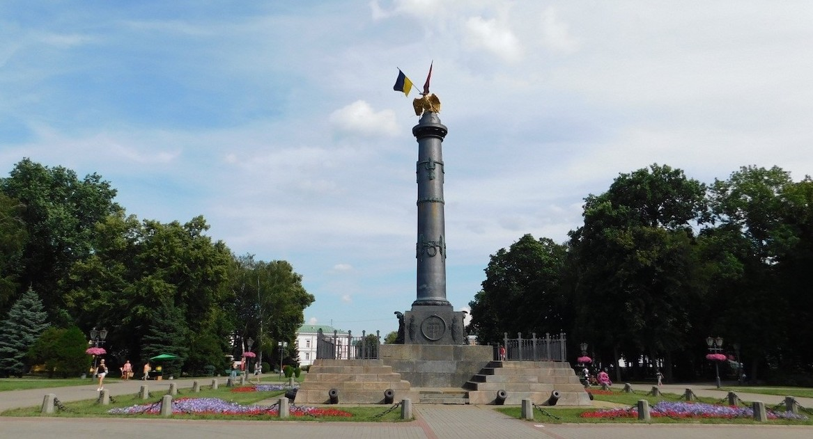
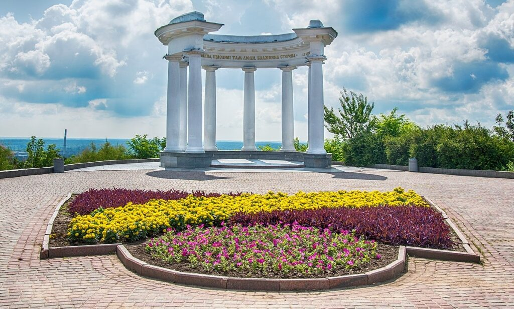
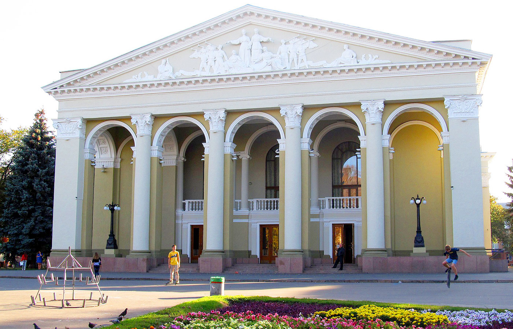

Монумент Слави
Монумент було встановлено на честь 100-річчя перемоги у Полтавській битві. Це одна з найвідоміших пам'яток міста.

Біла альтанка
Символ Полтави, з якого відкривається чудовий вид на місто та річку Ворсклу.

Театр ім. М.В. Гоголя
Театр з багатою історією та культурними традиціями. Названий на честь відомого письменника Миколи Гоголя.